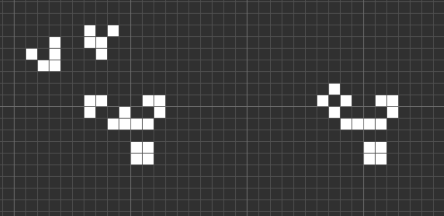

CGoL Glider Synthesis Converter Database Note: The database is still in development and currently not many converters is in it.
Programmed, updated and maintained by Random life lover
Specials thanks to: BobShemyakin, Martin Grant, MathAndCode for the data
From:
To:
Change in population:
Glider cost:
How to use the search interface:
From & To: The input and output of the converter. Note: For the sake of simplicity in coding, this parameter also returns all look-alikes and surrounding-dependent converters, for example:
 While technically incorrect, This converter is still labeled as "From: carrier / To: tub" in the database. I hope this problem can be solved in the future.